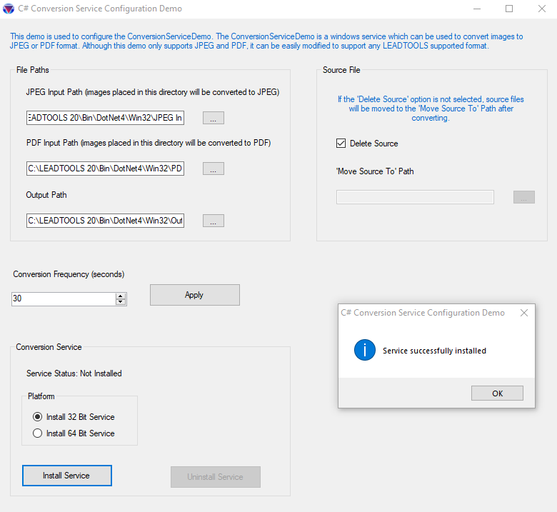

Conversion Service Configuration Demo
Serves as a configuration tool for the file conversion service created by ConversionServiceDemo.
Converts files to and from any of the LEADTOOLS supported formats.
